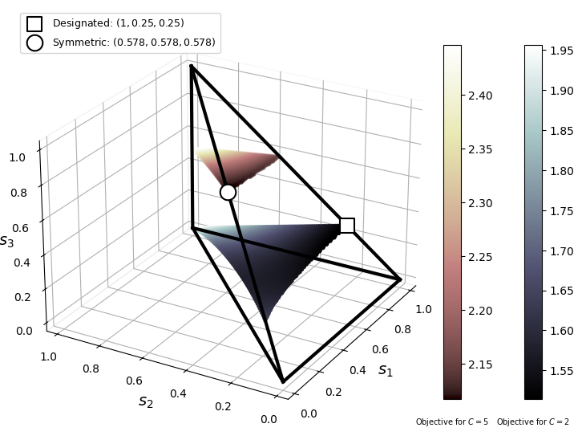
→ Adversarial procurement in blockchains preprint

→ Adversarial procurement in blockchains preprint
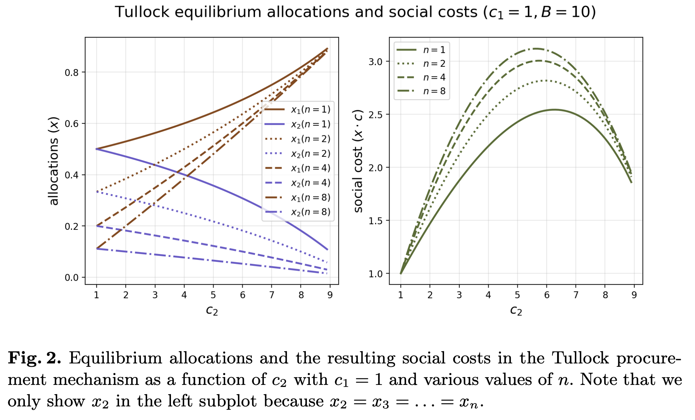
→ Beyond Winner-Take-All Procurement Auctions FC’26
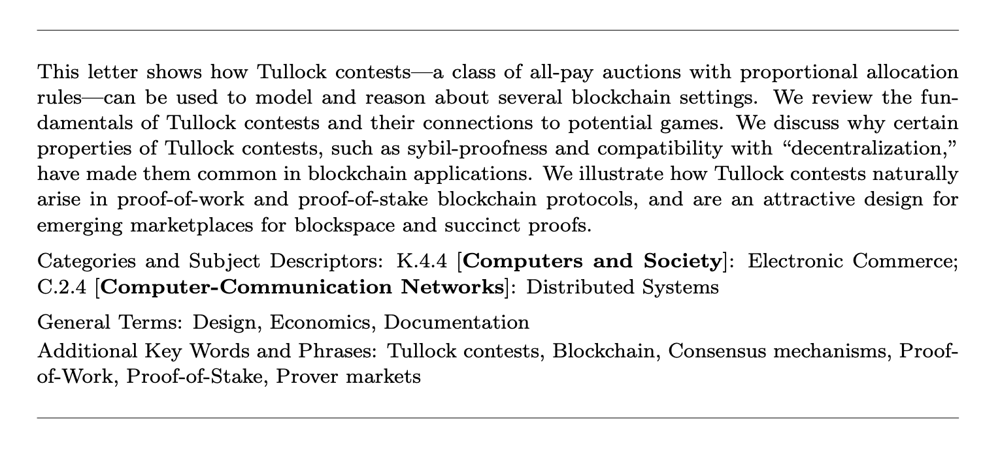
→ Tullock Contests in the Wild: Applications in Blockchains SIGecom Exchanges
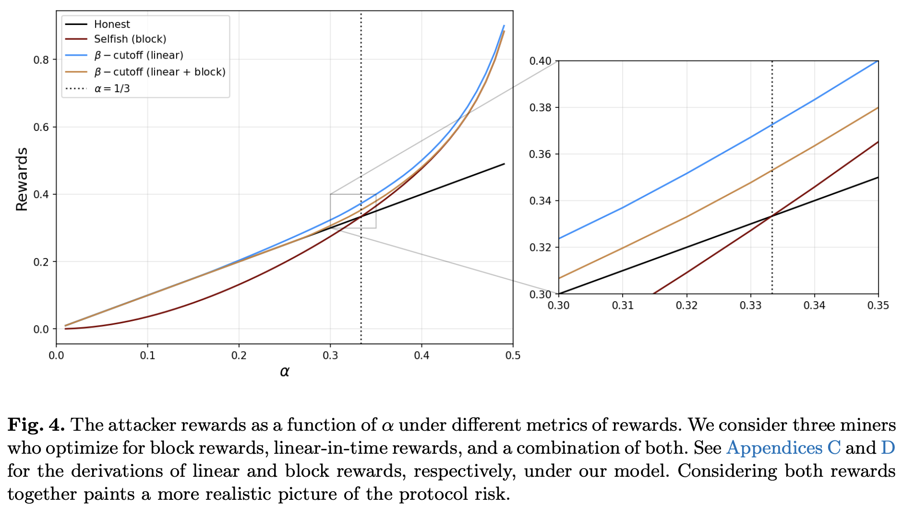
→ Selfish mining under general stochastic rewards AFT’25
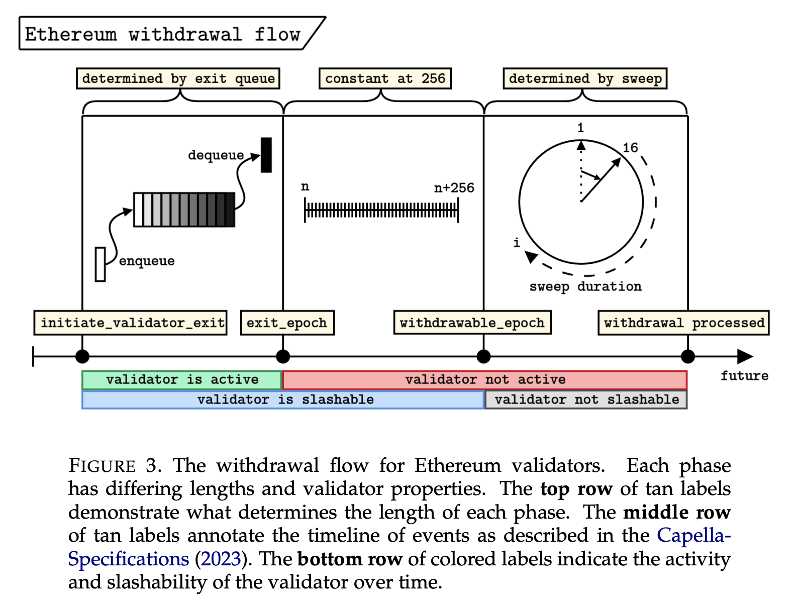
→ Optimizing Exit Queues for Proof-of-Stake Blockchains: A Mechanism Design Approach AFT’24
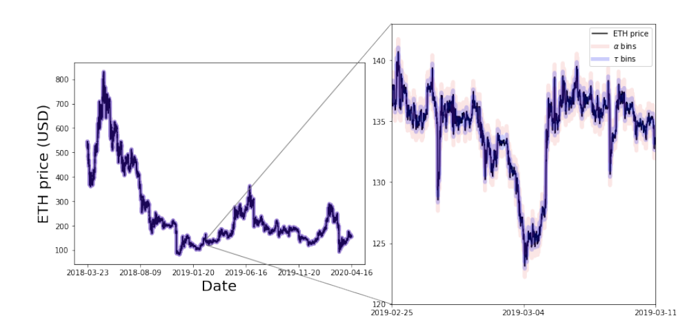
→ Strategic Liquidity Provision in Uniswap v3 AFT’23
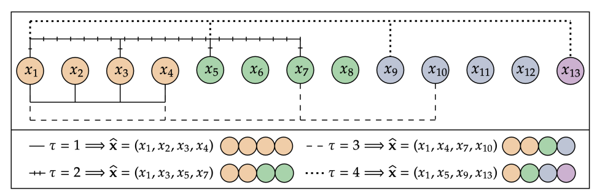
→ Detection of Local Mixing in Time-Series Data Using Permutation Entropy Physical Review E
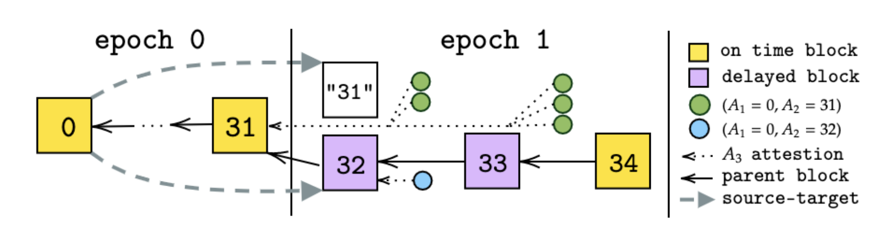
→ Low-cost attacks on Ethereum 2.0 by sub-1/3 stakeholders WINE — GTiB Workshop
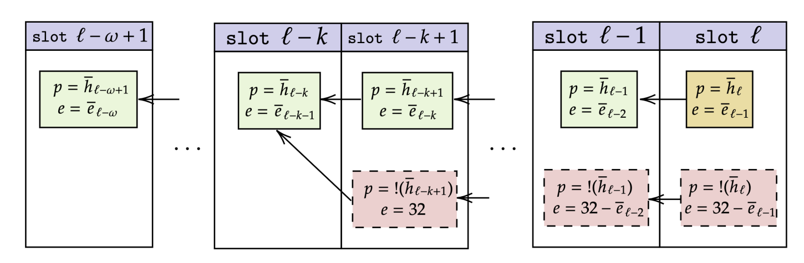
→ Defending Against Malicious Reorgs in Tezos Proof-of-Stake AFT’20
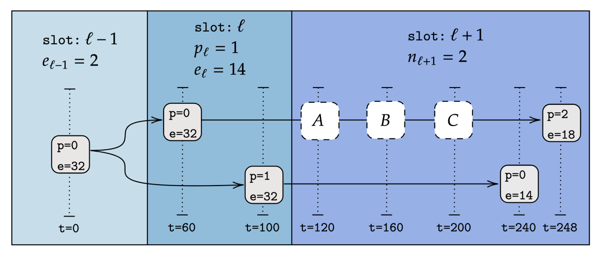
→ Selfish Behavior in the Tezos Proof-of-Stake Protocol CES’20
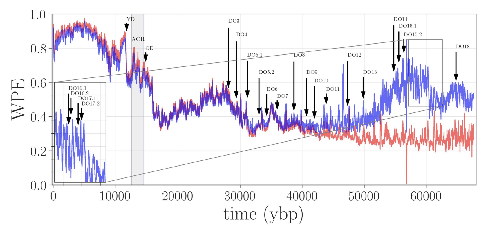
→ An information-theoretic approach to extracting climate signals from deep polar ice cores Chaos
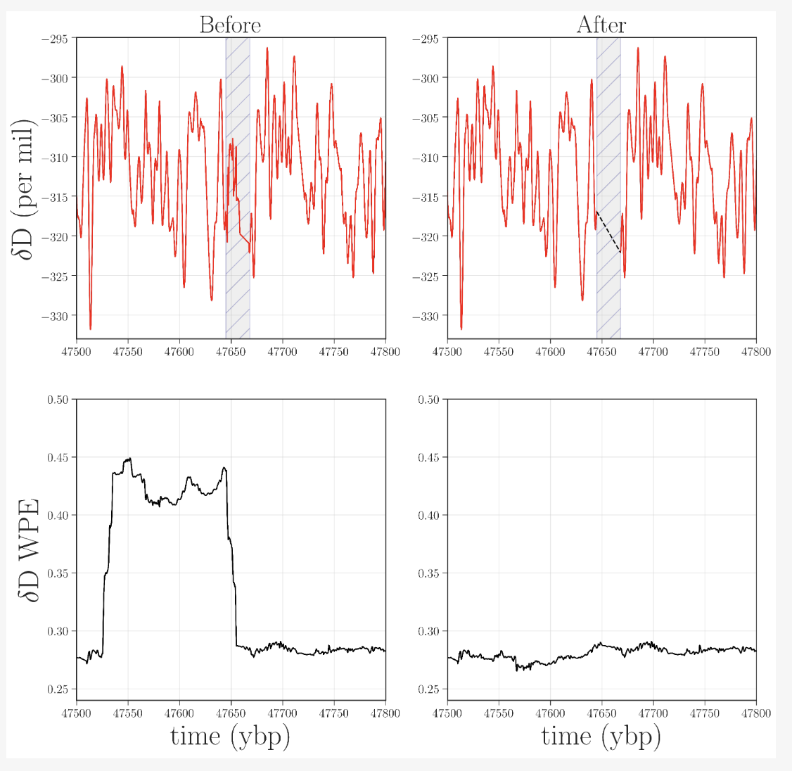
→ Anomaly Detection in Paleoclimate Records Using Permutation Entropy Entropy